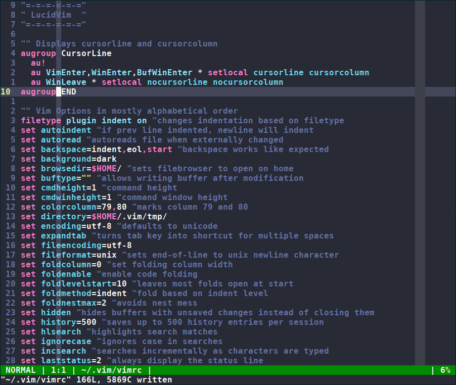
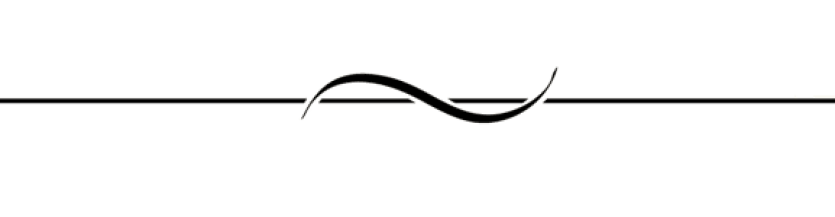

"=-=-=--=-=-="
" LucidVim "
"=-=-=--=-=-="



About

LucidVim is an out-of-the-box vim distribution for programmers.
It aims to provide all the tools expected from a modern programmer's
text editor without IDE-ifying it. The design philosophy for the project
is function over form and is heavily inspired by the
unix philosophy and the
suckless philosophy.
Features
- Clean and informative interface
- Key mappings for easier buffer/window creation and navigation
- Key mappings for newrw (vim's built-in file explorer)
- Configured to support many new and useful features of Vim8
- Sane config settings
- Aims not to diverge too much from vanilla vim while increasing usability
and functionality
- Completely plugin free
- Simple statusbar that adapts color to the
- mode and uses a minimal code base
What LucidVim is Not
- It's not a Virtual Machine (see: emacs). It isn't a planner, calendar,
browser, or any other extension that others may desire to tack on to
it.
- It's not an IDE (see: nvim). Our philosophy is about avoiding feature
creep and utilizing vim's strengths as a text editor.
- It's not a Sandbox to mold your own text editor. So many solutions to
making vim more usable involve boatloads of plugins and very custom config
files that stray far from vanilla behavior. We don't aim to reshape vim
into some new editor, but to let the vim experience shine with our added
useability features and settings.
Installation
Prerequisite - Have vim8 or higher
installed.
After installing vim, simply download this .vimrc to your home
directory
Help